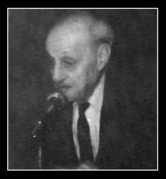

Prof. Dr. Halil Vehbi Eralp (1907 - 1994)

Halil Vehbi Eralp, 1907 Selanik doğumlu. İlköğrenimini Fevziye Lisesi'nde yaptı. İstanbul Erkek Lisesi'ni bitirdi. 1927-1928 tarihleri arasında bir yıl müddetle İstanbul Üniversitesi'nde Felsefe zümresine devam ettikten sonra Avrupa talebe sınavlarında başarılı olarak devlet tarafından Fransa'ya gönderilmiş ve bir yıl Bordeaux'da lisenin felsefe bölümüne devam etmiştir. Bordeaux Edebiyat Fakültesi'ne girdikten sonra 1929-1930 yılında Gaston Richard'ın yanında sosyoloji ve ahlâk, Darbon'un yanında Umumî Felsefe ve Mantık sertifikalarını almış; bundan sonra eğitimine Sorbonne'da devam ederek orada Prof. Henri Delacroix ve Georges Dumas'dan psikoloji, Prof. Emile Brehier ve Albert Riveaud'dan Felsefe Tarihi sertifikalarını alıp, Latince sınavını vermiştir. Yurt dışındaki eğitimini 1932 yılında bitiren Eralp, önce Konya Erkek Lises'inde, daha sonra ise Kadıköy Lisesi'nde felsefe öğretmenliği yaptı. 1933'de İstanbul Üniversitesi reformunda Edebiyat Fakültesi Felsefe Doçentliği'ne tayin edildi. Bu tarihten itibaren Prof. Reichenbach'ın seminerlerine katılıp bazı derslerini Türkçe'ye çeviren Eralp, riyazi mantık (logistik) üzerinde çalışmaya başlamış; Reichenbach'ın logistiğe ait derslerini çevirmiş ve yayınlamıştır. 1935 yılında askerliğini bitirdi. 27 Kasım 1937'de Felsefe Tarihi doçentliğinden, Umumî Felsefe ve Mantık doçentliğine atandı. Yine 1937'de Rönesans üzerine iki konferans verdi: 1 — Rönesansı Hazırlayan Sebepler, 2 — Rönesans'da Fikir Cereyanları.
28.10.1938'de Von Aster, Eralp'in doçentlik sınavına girme isteğini onaylayıp dekanlığa bildirir. 9 Kasım 1938'de dil sınavını verdiğinde jürisinde Ord. Prof. İbrahim Hakkı Akyol, Ord. Prof. Sekip Tunç, Prof. Ragıp Özdem ve Doç. Enver Ziya Karal vardı. 25 Mart 1938'de Beşiktaş Halkevinde «Rüyalar» adlı bir konferans verdi. 5 Aralık 1939'da saat 15.00'de Felsefe Dershanesi'nde deneme dersini verdi; konusu «Descartes'a gelinceye kadar ve Descartes'ta Akıl ve İman Meselesi»ydi. 12 Aralık 1939 salı günü saat 15.00'de Edebiyat Fakültesi Felsefe Doçent odasında Vehbi Eralp'in doçentliği için bir kollokyum yapıldı. Kollokyumda, Eralp'in verdiği konular arasında «Descartes Fiziğinin Metafizik Temelleri» seçildi ve tartışıldı. 3 saatlik bir değerlendirme sonucunda pekiyi dereceyle doçent ünvanını aldı. Jüride Ord. Prof. A. H. Ongunsu, Ord. Prof. Mustafa Şekip Tunç, Ord. Prof. Ernst Von Aster, Ord. Prof. W. Peters ve Prof. H. Ritter, S. Celâl Antel ve Prof. R. Özdem vardı. Sonradan yayınladığı «Descartes ve Modern Fikir Cereyanları» adlı makalesinde Descartes'ın modern felsefeye etkisi üzerinde durdu.
Vehbi Eralp'in «Matematik, Fizik ve Kimyada Metod» başlıklı çalışması; matematiğin bilgi içindeki yerini, kuruluşunu ve deneyle olan ilişkisini inceler. Deneyin matematikte tuttuğu yeri, doğa bilimlerinde tuttuğu yerden ayırır. Doğa bilimlerinde deney hep işin içindedir, doğayı inceleyip araştıran bilimler, deney alanıyla birlikte gider, onunla içiçedir. Matematikte ise deney, yalnızca bir «hareket noktası» dır; zekânın çevresine uymasına yol açar; böylece, çevremiz bambaşka olsaydı, metamatiğimiz de bambaşka olurdu, sonucuna varır. Bu kitapta matematik, çevreye yani deneye dayanan, hareketini deneyden alan bir işleyiş; ama bir kez hareket aldıktan sonra, deneye gereksinim duymayan bir işleyiş olarak tanımlanır. Kitabın ikinci kısmı, fizik ve kimyada yönteme ayrılır.
1943 yılında Sosyoloji Dergisi'nde (sayı 2) yayınlanan «Ahlak ve Adetler İlmi» adlı makale, Levy Brühl'ün aynı adlı eserinin yorumu ve eleştirisini içermektedir. Bu makale Sosyoloji derslerinde bir çok kez kaynak olarak önerilmiştir. «Dünya Nimetleri» adlı makalesinde ise, mutluluğun kaynağını arar; mutluluk ona göre bir nimet; ve bütün nimetler de maddi ve manevi diye ikiye ayrılır. Madde türünden olan nimetler, insanları birbirinden ayırıp, birbirine düşürebilir; oysa manevi olanlar insanları birbirine yaklaştırıp bağlar. Bu birleştirici özellikten, yani manevi nimetlerden ahlak ortaya çıkar. «Din ve Ahlak» adlı makalesinde, ahlakın din karşısındaki bağımsızlığını ve din ile ahlakın tümden ayrı alanlar olduğunu savunur.
Vehbi Eralp 1940 yılında, Hayriye Lisesi'nde haftada 6 saat felsefe dersi verdi. 1942 yılında Ruhiyat (Psikoloji) Profesörü Sabri Esat Siyavuşgil ve Anglistik (İngiliz Dili ve Edebiyatı) Doçenti Vahit Turhan ile beraber 3 ay ordu hizmetine alındı. 1944 yılında Işık Lisesi'nde haftada 3 saat Psikoloji dersi verdi. 1949 yılında Profesör olmak için başvurdu. Almanca dil sınavını verdikten sonra, Ord. Prof. Şekip Tunç, Ord. Prof. Walter Kranz, Ord. Prof. W. Peters, Prof. îpşiroğlu ve Prof. Hilmi Ziya Ülken'den oluşan jüri değerlendirmesiyle Profesör oldu.
Yurt içinde ve dışında birçok kongre ve toplantıda Türkiye'yi temsilen bulunan Vehbi Eralp, 31 Ekim 1949'da İ. Ü. Yabancı Diller Okulu'nun müdürlüğüne seçildi. Bunun dışında, Unesco Türkiye Millî Komisyonu üyeliği de yapan Eralp, 3 Kasım 1961-2 Kasım 1966 tarihleri arasında Edebiyat Fakültesi Dekanı oldu. 13 Temmuz 1977'de 70 yaşını doldurarak emekli oldu. Vehbi Eralp 1994 tarihinde vefat etmiştir.
- Yorum göndermek için giriş yapın
- 5325 okuma
2013-2014 Ders Programı
G: I. Öğretim | II. Öğretim
Lisansüstü | Bilimsel Hazırlık
B: I. Öğretim | II. Öğretim
Lisansüstü | Bilimsel Hazırlık
2012-2013 Ders Programı
G: I. Öğretim | II. Öğretim
B: I. Öğretim | II. Öğretim
Lisansüstü | Bilimsel Hazırlık
2011-2012 Ders Programı
G: I. Öğretim | II. Öğretim
Lisansüstü | Bilimsel Hazırlık
B: I. Öğretim | II. Öğretim
Lisansüstü | Bilimsel Hazırlık
Danışmanlar: node/377